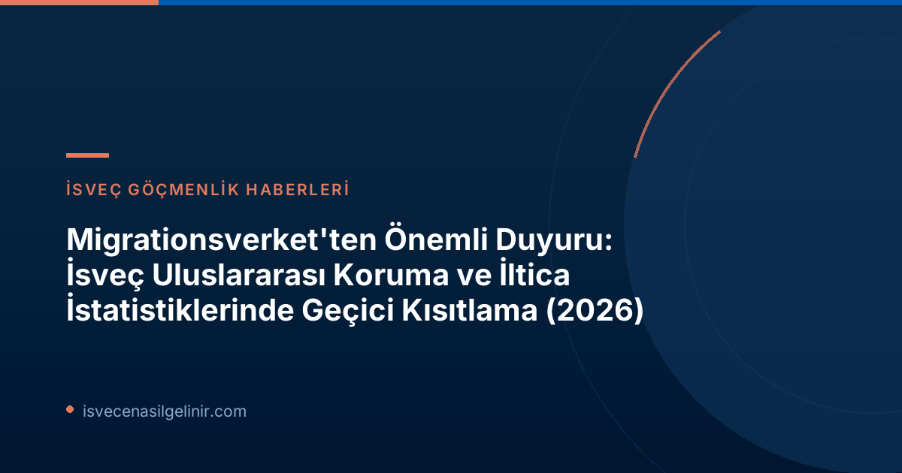

H2: Migrationsverket'ten Güncel Duyuru: Uluslararası Koruma ve İltica İstatistikleri Geçici Olarak Kısıtlandı İsveç Göçmenlik Dairesi (Migrationsverket), 2026-06-22 tarihinde yaptığı resmi açıklamayla, uluslararası koruma ve iltica ile ilgili tam istatistikleri geçici bir süreyle sunamayacağını duyurdu. Bu durum, özellikle göçmenlik süreçlerini takip edenler, araştırmacılar ve kamuoyu için önemli bir bilgilendirme eksikliği anlamına geliyor. H3: Neden Bu Kısıtlama Geldi? AB Ortak Göç Kuralları Devrede Bu kısıtlamanın temel nedeni, Avrupa Birliği'nin 12 Haziran 2026 tarihinde yürürlüğe giren yeni ortak göç kuralları, yani `Göç ve İltica Paktı`'dır. Bu yeni pakt, AB'ye yönelik göçün ve ilticanın nasıl ele alınacağına dair kapsamlı değişiklikler getiriyor. Özellikle uluslararası koruma (iltica) süreçleri bu değişikliklerden doğrudan etkileniyor. Migrationsverket, yeni kurallar nedeniyle uluslararası koruma ile ilgili bilgileri kaydetme, tanımlama ve takip etme şekillerini uyarlamak zorunda kalmıştır. Kurumun planlama direktörü Eric Ramstedt'in belirttiği gibi, sistem uyarlamaları henüz tamamlanmadığı için 12 Haziran sonrası üretilen istatistiklerin hatalı veya yanıltıcı olma riski bulunmaktadır. Bu nedenle, öncelikli veya manuel olarak hazırlanan istatistiksel özetler yayımlanmayacaktır. H3: Hangi İstatistikler Bu Kısıtlamadan Etkilenecek? Kısıtlamalar, uluslararası koruma ve iltica süreçlerinin birçok kritik alanındaki istatistikleri doğrudan etkilemektedir.
| Etkilenen İstatistik Kategorileri | Açıklama |
|---|---|
| **Uluslararası Koruma (İltica) Başvuruları** | Yeni iltica başvurularının sayısı ve gidişatı. |
| **Yürütmeyi Durdurma ve Engeller** | Sınır dışı edilme kararlarına karşı yürütmeyi durdurma talepleri ve engellerle ilgili veriler. |
| **Tarama (Screening) Süreçleri** | AB dış sınırlarında yapılan ilk tarama ve kayıt süreçlerine ilişkin istatistikler. |
| **Geri Dönüşler** | Gönüllü veya zorunlu geri dönüşlerle ilgili veriler. |
| **Diğer Bağlantılı Veriler** | Uluslararası koruma süreciyle ilişkilendirilmesi gereken diğer tüm istatistikler. |
Özellikle dikkat çekilmesi gereken bir husus da, 12 Haziran öncesinde yapılan ancak henüz karara bağlanmamış iltica başvurularına ait istatistiklerin de bu kısıtlamadan etkileniyor olmasıdır. H3: Geçici Durum Ne Kadar Sürecek ve Çözüm Ne Zaman Gelecek? Migrationsverket, gerekli bilgi teknolojisi (IT) altyapılarını ve takip sistemlerini oluşturma çalışmalarına hızla devam etmektedir. Bu yapının 2026 sonbaharı boyunca kademeli olarak tamamlanması hedeflenmektedir. Sistemler uygun hale geldiğinde, etkilenen tüm istatistikler geçmişe dönük olarak (in-situ) derlenecek ve yayımlanacaktır. Eric Ramstedt, istatistiklerin ne zaman tam olarak kullanıma sunulabileceği konusunda kesin bir tarih veremeyeceklerini, ancak bu sürecin mümkün olan en kısa sürede tamamlanması için çalıştıklarını belirtmiştir. H3: Geçiş Sürecinde Hangi Verilere Erişilebilecek? İstatistiksel verilerdeki bu geçici boşluğu doldurmak amacıyla Migrationsverket, web sitesinde 15 Temmuz'dan itibaren `kayıtlı uluslararası koruma başvurularının sayısına` ilişkin verileri düzenli olarak yayımlayacaktır.
Önemli Not: Geçici Veriler Hakkında Dikkat Edilmesi Gerekenler
Bu geçici olarak yayımlanacak başvurulara ilişkin sayılar "istatistik" olarak kabul edilmemelidir. Migrationsverket'in dava yönetim sisteminden alınan bu veriler, eksiklikler içerebilir ve bu nedenle dikkatle yorumlanmalıdır. Ayrıca, bu veriler daha önce açıklanan gelen iltica başvuruları istatistikleriyle karşılaştırılamaz niteliktedir. İsveç'te göç ve entegrasyon süreçlerine dair güncel bilgiler için sverigemedborgarskapsprov.com adresini takip edebilirsiniz.Sonuç ve Önemli Notlar:
AB Göç ve İltica Paktı'nın yürürlüğe girmesiyle birlikte İsveç'teki göç süreçlerinde yaşanan bu sistemsel dönüşüm, kısa vadede istatistiksel verilere erişimde zorluklara neden olacaktır. Migrationsverket'in sistemi uyarlayarak daha kapsamlı ve doğru veriler sunmayı hedeflemesi olumlu bir gelişme olmakla birlikte, bu süreçteki belirsizliklerin takip edilmesi önem taşımaktadır. İsveç'e yeni gelenlerin veya iltica sürecindeki kişilerin, resmi duyuruları ve güncellemeleri Migrationsverket'in kendi web sitesi üzerinden düzenli olarak kontrol etmeleri tavsiye edilir.
Kaynaklar
İsveç Göçmenlik Süreçleri Hakkında Daha Fazla Bilgi Edinin
İsveç'e göç, iltica, çalışma veya vatandaşlık süreçleri hakkında en güncel ve doğru bilgilere ulaşmak için kaynaklarımızı keşfedin.